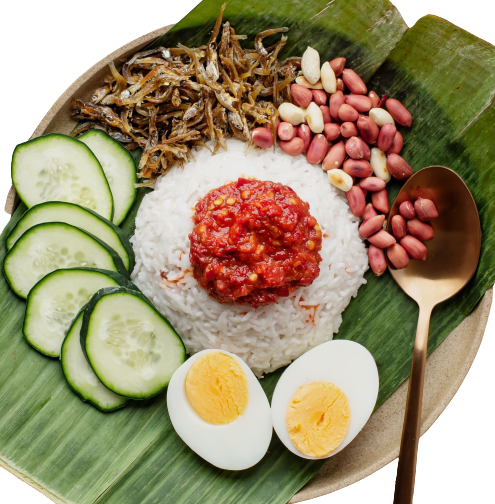

If countries were awarded for diversity, Malaysia would top first place. Not only is Malaysia a melting pot of ethnic cultures, but it is also a blend of many different customs, cuisines and religions all coexisting peacefully together. From large island groups to mountains, fertile highlands, tropical rainforest and mangrove estuaries, the country's geography is every bit as diverse.
What's more, Malaysia is a unique country in that is divided into two main landmasses. West Malaysia occupies the southern half of a peninsula shared with Thailand, while across the South China Sea is East Malaysia, situated on the Borneo island.
West Malaysia is home to the capital city, Kuala Lumpur, a large metropolis of impressive skyscrapers, fabulous shopping districts, museums, theaters, hotels, international restaurants and buzzing nightlife. Melaka is a city rich in history, architecture and traditions. Penang Island is famous for its exquisite cuisine and beautiful colonial George Town. A visit to the Cameron Highlands offers cool weather and spectacular scenery of flower farms and tea plantations. Tioman, Langkawi and the Perhentian Islands are some of the world's most breathtaking islands, and Redang is a scuba diving paradise.
On the Borneo side, East Malaysia is known for its wild jungle, rainforests, extraordinary cave systems, orangutans, granite peaks and remote tribes. Major cities like Kuching and Kota Kinabalu serve as gateways to exploring these natural attractions.
Kuala Lumpur, capital of Malaysia. The city is located in west-central Peninsular (West) Malaysia, midway along the west coast tin and rubber belt and about 25 miles (40 km) east of its ocean port, Port Kelang, on the Strait of Malacca. It is the country's largest urban area and its cultural, commercial, and transportation centre.
Semporna is located on the southeast coast of Sabah and is the capital of the Semporna district. It is known as the gateway to Sabah diving paradise. Tourists usually take a flight to Tawau Airport and then book an airport taxi to Semporna Town, which is 81.7 km from Tawau Town. Alternatively, long-distance bus services are also available in Kota Kinabalu City.
Langkawi is a popular island located off the coast of Malaysia in the stunningly clear Andaman. It's a beautiful island and most of the activities offered here are at a much more affordable rate than at the islands of Thailand, making it a popular travel destination not just for westerners but Asians as well. It's called the Jewel of Kedah and is a group of 99 islands.
The Stadthuys is a historical building located in Malacca City, the capital of Malacca, Malaysia. It is the oldest Dutch building in Southeast Asia, and is often referred to as the Red Square. Famous for its red exterior and the nearby red clock tower, the Stadthuys was built by the Dutch in 1650 to serve as the offices of the Dutch governor and lieutenant governor.
What to eat?
Indulge in authentic Malaysian food
You will be spoilt for choice with Malaysian food options.
Highly Recommended: